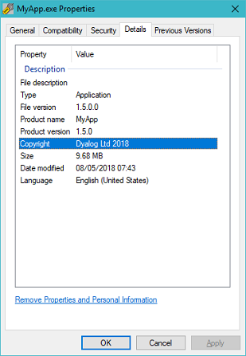

It’s time to take a closer look at the process of building the application workspace and exporting the EXE. In this chapter we’ll
- add the automated execution of test cases to the DYAPP
- create a Make utility that allows us to create everything thats finally shipped to the customer
At first glance you might think all we need are two versions of the DYAPP, one for development and one for producing the EXE, but there will be tasks we cannot carry out with this approach. Examples are:
- On our development machine DYAPPs are associated (in the Windows Registry) with a single version of Dyalog. We need a way to control which version that is, even if at this point there is just one version installed on our machine.
- We might want to convert any Markdown documents – like README.MD – into HTML documents. While the MD is the source, only the HTML will be shipped.
- We need to ensure the Help system – which we will introduce soon – is properly compiled and configured by the Make utility.
- Soon we shall need an installer that produces an EXE we can send to the customer for installing the software.
We resume, as usual, by saving a copy of Z:\code\v09 as Z:\code\v10. Now delete MyApp.exe from Z:\code\v10: from now on we will create the EXE somewhere else.
MyApp.dyapp does not need many changes, it comes with everything needed for development. The only thing we add is to execute the test cases automatically. Almost automatically.
In an ideal world we would ensure all test cases pass before the end of each working day. But sometimes that is just not possible, due to the amount of work involved.
In such cases it might be sensible to execute the test cases before you start working: if you know they will fail and there are many of them there is no point in wasting computer resource and your time; better ask.
For that we are going to have a function YesOrNo, very simple and straightforward. Its right argument (question) is printed to the session and then the user might answer that question.
If she does not enter one of: “YyNn” the question is repeated. If she enters one of “Yy” a 1 is returned, otherwise a 0. Since we use this to ask ourself (or other programmers) the function does not have to be bulletproof; we just use ¯1↑⍞.
But where exactly should this function go? Though it is helpful it has no part in our final application. Therefore we put it into a new script called DevHelpers. We also add a function RunTests to this new script:
:Namespace DevHelpers
∇ {r}←RunTests forceFlag
⍝ Runs the test cases in debug mode, either in case the user wants to
⍝ or if `forceFlag` is 1.
r←''
:If forceFlag
:OrIf YesOrNo'Would you like to execute all test cases in debug mode?'
r←#.Tests.RunDebug 0
:EndIf
∇
∇ flag←YesOrNo question;isOkay;answer
isOkay←0
⎕←(⎕PW-1)⍴'-'
:Repeat
⍞←question,' (y/n) '
answer←¯1↑⍞
:If answer∊'YyNn'
isOkay←1
flag←answer∊'Yy'
:EndIf
:Until isOkay
∇
:EndNamespaceWe add a line to the bottom of MyApp.dyapp:
...
Run #.Tester.EstablishHelpersIn #.Tests
Run #.DevHelpers.RunTests 0
Now a developer who double-clicks the DYAPP in order to assemble the workspace will always be reminded of running all test cases before she starts working on the application. Experience tells us that this is a good thing.
One minor thing needs our attention: because we create MyApp.exe now in a folder MyApp, simply setting ⎕WSID to MyApp does not do any more. We need to make a change to the StartFromCmdLine function in MyApp.dyalog:
...
∇ {r}←StartFromCmdLine arg;MyLogger;Config;rc;⎕TRAP
⍝ Needs command line parameters, runs the application.
r←⍬
⎕TRAP←#.HandleError.SetTrap ⍬
⎕SIGNAL 0
⎕WSID←⊃{⍵/⍨~'='∊¨⍵}{⍵/⍨'-'≠⊃¨⍵}1↓2⎕nq # 'GetCommandLineArgs'
#.FilesAndDirs.PolishCurrentDir
...This change ensures the ⎕WSID will be correct. Under the current circumstances it will be MyApp\MyApp.dws.
Note that we access GetCommandLineArgs as a function call with ⎕NQ rather than referring to #.GetCommandLineArgs; over the years that has proven to be more reliable.

In most programming languages the process of compiling the source code and putting together an application is done by a utility that's called Make; we use the same term.
At first sight it might seem all we need is a reduced version of MyApp.dyapp, but not so. Soon we will discuss how to add a Help system to our application.
We must then make sure that the Help system is compiled properly when the application is assembled. Later, more tasks will come up. Conclusion: our Make file cannot be a DYAPP; we need more flexibility.
More complex scenarios
In a more complex application than ours you might prefer a different approach. Using an INI file for this is not a bad idea: it gives you scope to define more than just the modules to be loaded, and some code to execute.
Also, if you have not one butseveral applications to support, it is useful to implement your own generalised user command like ]runmake.
Execute, Tester and Tests have no place in the finished application, nor do we need the test helpers either.
For now, we’ll create a DYAPP file Make.dyapp that performs the Make.
However, if you want to specify explicitly the version of Dyalog that should run this DYAPP rather than using whichever version happens to be associated with the file extension DYAPP at the time you double-click it, (also DWS and DYALOG) you need a batch file that starts the correct version of Dyalog.
Create such a batch file as Make.bat:
"C:\Program Files\Dyalog\Dyalog APL{yourPreferredVersion}\Dyalog.exe" DYAPP="%~dp0Make.dyapp"
@echo off
if NOT ["%errorlevel%"]==["0"] (
echo Error %errorlevel%
pause
exit /b %errorlevel%
)Edit to use your chosen Dyalog version of your choice. You can see the version currently associated on your machine:
'"',(⊃#.GetCommandLineArgs),'"'You might want to add other parameters like MAXWS=128M (or MAXWS=6G) to the BAT.
Notes:
- The expression
%~dp0in a batch file will give you the full path – with a trailing\– of the folder that hosts the batch file. In other words,"%~dp0Make.dyapp"would result in a full path pointing toMyApp.dyapp, no matter where that is as long as it is a sibling of the BAT file.You must specify a full path because when the interpreter looks for the DYAPP, the current directory is where the EXE lives, not where the BAT file lives.
- Checking
errorlevelensures that, in case of an error, the batch file shows the return code and then pauses.That gets us around the problem that when you double-click a BAT file, you see a black windows popping up for a split of a second, leaving you wondering whether it succeeded.
Now if an error occurs, the script will pause. And it will pass the value of
errorlevelas its return code.However, this technique suits only scripts to be executed by a WCU [1]; you don’t want a pause in scripts called by other scripts. <!– FIXME What should those scripts do? –>
The current directory
For APLers, the current directory (sometimes called “working directory”) is, when running under Windows, a strange animal. In general, the current directory is where ‘the application’ lives.
That means that for an application C:\Program Files\Foo\Foo.exe the current directory will be C:\Program Files\Foo.
For APLers “the application” is not the DYALOG.EXE, it’s the workspace, whether it was loaded from disk or assembled by a DYAPP. When you double-click MyApp.dyapp the interpreter changes the current directory for you: it’s going to be where the DYAPP lives, which suits an APL application programmer’s point of view.
The same holds true when you double-click a DWS but it is not true when you load a workspace: the current directory then remains what it was before, by default where the Dyalog EXE lives.
So it’s smart to change the current directory yourself at the earliest possible stage after loading a workspace: call #.FilesAndDirs.PolishCurrentDir and you’re covered, no matter what the circumstances are. One of the authors has been doing this for roughly 20 years now, and it has solved several problems without introducing new ones.
Now we need to establish the Make.dyapp file:
Target #
Load ..\AplTree\APLTreeUtils
Load ..\AplTree\FilesAndDirs
Load ..\AplTree\HandleError
Load ..\AplTree\IniFiles
Load ..\AplTree\OS
Load ..\AplTree\Logger
Load Constants
Load Utilities
Load MyApp
Run #.MyApp.SetLX ⍬
Load Make
Run #.Make.Run 1The upper part (until the blank line) is identical with MyApp.dyapp, without the stuff that’s needed only during development. We then load a script Make and finally we call Make.Run. Here’s Make at this point:
:Class Make
⍝ Puts the application `MyApp` together:
⍝ 1. Remove folder `DESTINATION\` in the current directory
⍝ 2. Create folder `DESTINATION\` in the current directory
⍝ 3. Copy icon to `DESTINATION\`
⍝ 4. Copy the INI file template over to `DESTINATION`
⍝ 5. Creates `MyApp.exe` within `DESTINATION\`
⎕IO←1 ⋄ ⎕ML←1
DESTINATION←'MyApp'
∇ {filename}←Run offFlag;rc;en;more;successFlag;F;U;msg
:Access Public Shared
F←##.FilesAndDirs ⋄ U←##.Utilities
(rc en more)←F.RmDir DESTINATION
U.Assert 0=rc
successFlag←'Create!'F.CheckPath DESTINATION
U.Assert successFlag
(successFlag more)←2↑'images'F.CopyTree DESTINATION,'\images'
U.Assert successFlag
(rc more)←'MyApp.ini.template'F.CopyTo DESTINATION,'\MyApp.ini'
U.Assert 0=rc
Export'MyApp.exe'
filename←DESTINATION,'\MyApp.exe'
:If offFlag
⎕OFF
:EndIf
∇
:EndClassIt is common practice in any programming language to inject checks into the code to throw an error if necessary conditions are not met.
Let’s define a function Assert in Utilities:
:Namespace Utilities
map←{
(,2)≢⍴⍺:'Left argument is not a two-element vector'⎕SIGNAL 5
(old new)←⍺
nw←∪⍵
(new,nw)[(old,nw)⍳⍵]
}
Assert←{⍺←'' ⋄ (success errorNo)←2↑⍵,11 ⋄ (,1)≡,success:r←1 ⋄ ⍺ ⎕SIGNAL errorNo}
:EndNamespaceNotes:
- The right argument of
Assertis a scalar or vector of length 1 or 2.- The first element is a boolean: 1 for success
- The second element is the integer error number to signal; it defaults to 11 (DOMAIN ERROR)
- The optional left argument is a left argument to
⎕SIGNAL. - If the right argument is any ‘flavour’ of
1(scalar, vector, matrix, …)Assertreturns a (shy!) result1. - In all other cases
AssertsignalserrorNowith the message specified in the left argument, if any.
Because it’s a one-liner you cannot trace into Assert. That’s a good thing.
This is an easy way to make the calling function stop when something goes wrong. There is no point in doing anything but stopping the code from continuing since it is called by a programmer. When it fails you want to investigate straight away.
And things can go wrong quite easily. For example, removing DESTINATION might fail simply because another user is looking into DESTINATION with Windows Explorer.
First we create the folder DESTINATION from scratch and then we copy everything that’s needed to the folder DESTINATION: the application icon and the INI file. Whether the function executes ⎕OFF or not depends on the right argument offFlag. Why that is needed will become apparent soon.
We don’t copy MyApp.ini into DESTINATION but MyApp.ini.template; therefore we must create this file: copy MyApp.ini to MyApp.ini.template and then check its settings: in particular these settings are important:
...
[Config]
Debug = ¯1 ; 0=enfore error trapping; 1=prevent error trapping;
Trap = 1 ; 0 disables any :Trap statements (local traps)
ForceError = 0 ; 1=let TxtToCsv crash (for testing global trap handling)
...
[Ride]
Active = 0
...Those might well get changed in MyApp.ini while working on the project, so we make sure that we get them set correctly in MyApp.ini.template.
However, that leaves us open to another problem. Suppose we introduce a new section and/or a new key and forget to copy it over to the template. To prevent this we add a test case to Tests:
∇ R←Test_misc_01(stopFlag batchFlag);⎕TRAP;ini1;ini2
⍝ Check if MyApp.ini & MyApp.ini.template have same sections & keys
⎕TRAP←(999 'C' '. ⍝ Deliberate error')(0 'N')
R←∆Failed
ini1←⎕NEW ##.IniFiles(,⊂'MyApp.ini')
ini2←⎕NEW ##.IniFiles(,⊂'MyApp.ini.template')
→PassesIf ini1.GetSections{(∧/⍺∊⍵)∧(∧/⍵∊⍺)}ini2.GetSections
→PassesIf(ini1.Get ⍬ ⍬)[;2]{(∧/⍺∊⍵)∧(∧/⍵∊⍺)}(ini2.Get ⍬ ⍬)[;2]
R←∆OK
∇The test simply checks whether the two INI files have the same sections and the same keys; that will alert us if we forget something.
For the Bind method we can specify different types. We add them to the Constants namespace, in their own subspace:
:Namespace Constants
...
:EndNamespace
:Namespace BIND_TYPES
ActiveXControl←'ActiveXControl'
InProcessServer←'InProcessServer'
Library←'Library'
NativeExe←'NativeExe'
OutOfProcessServer←'OutOfProcessServer'
StandaloneNativeExe←'StandaloneNativeExe'
:EndNamespace
:EndNamespaceWhy do this? By listing all available options, it makes the code self-explanatory.
:Namespace Constants
...
:EndNamespace
:Namespace BIND_FLAGS
BOUND_CONSOLE←2
BOUND_USEDOTNET←4
RUNTIME←8
BOUND_XPLOOK←32
:EndNamespace
:EndNamespaceRun then calls Export, a new private function in the Make class:
...
∇ {r}←{flags}Export exeName;type;flags;resource;icon;cmdline;try;max;success;details;fn
⍝ Attempts to export the application
r←⍬
flags←##.Constants.BIND_FLAGS.RUNTIME{⍺←0 ⋄ 0<⎕NC ⍵:⍎⍵ ⋄ ⍺}'flags'
max←50
type←##.Constants.BIND_TYPES.StandaloneNativeExe
icon←F.NormalizePath DESTINATION,'\images\logo.ico'
resource←cmdline←''
details←''
details,←⊂'CompanyName' 'My company'
details,←⊂'ProductVersion'(2⊃##.MyApp.Version)
details,←⊂'LegalCopyright' 'Dyalog Ltd 2018'
details,←⊂'ProductName' 'MyApp'
details,←⊂'FileVersion' '1.2.3.4'
details←↑details
success←try←0
fn←DESTINATION,'\',exeName ⍝ filename
:Repeat
:Trap 11
2 ⎕NQ'.' 'Bind' fn type flags resource icon cmdline details
success←1
:Else
⎕DL 0.2
:EndTrap
:Until success∨max<try←try+1
:If 0=success
⎕←'*** ERROR: Failed to export EXE to ',fn,' after ',(⍕try),' tries.'
. ⍝ Deliberate error; allows investigation
:EndIf
∇
:EndClassExport automates what we’ve done so far by calling the Export command from the File menu. If the Bind method fails, it retries up to 50 times before giving up.
From experience we know that, with the OS, the machine, the network, the filesystem and who knows what else, the command can fail several times before finally succeeding.
The Bind method
Note that for the Bind method to work as discussed in this chapter you must use at least version 16.0.31811.0 of Dyalog. Before that Bind was not an official method and did not support the details.
Double-click Make.dyapp: a folder MyApp should appear in Z:\code\v10 with, among other files, MyApp.exe.
Open a Windows Explorer (Windows + E), navigate to the folder hosting the EXE, right-click the EXE and select Properties from the context menu, then click on the Details tab.

As you can see, the fields File version, Product name, Product version and Copyright hold the information we have specified.

Note that the names we have used are not the names used by Microsoft in the GUI. The MSDN [2] provides details.
Now that we have a way automatically to assemble all the files required by our application we need to amend our tests. Double-click MyApp.dyapp. You don't need to execute the test cases right now because we are going to change them.
We need to make a few changes:
:Namespace Tests
⎕IO←1 ⋄ ⎕ML←1
∇ Initial;list;rc
U←##.Utilities ⋄ F←##.FilesAndDirs ⋄ A←##.APLTreeUtils
∆Path←F.GetTempPath,'\MyApp_Tests'
F.RmDir ∆Path
'Create!'F.CheckPath ∆Path
list←⊃F.Dir'..\..\texts\en\*.txt'
rc←list F.CopyTo ∆Path,'\'
:If ~R←0∧.=⊃rc
⎕←'Could not create ',∆Path
:EndIf
⎕SE.UCMD'Load ',F.PWD,'\Make.dyalog -target=#'
#.Make.Run 0
∇
...
:EndNamespaceInitial
- loads the script
Make.dyaloginto# - runs the function
Make.Run; the0right argument tellsMake.Runnot to execute⎕OFF– something we would not appreciate at this stage
With the two DYAPPs and the BAT file, your development cycle now looks like this:
- Launch
MyApp.dyappand check the test results. - Fix any errors and rerun
#.Tests.Rununtil it’s fine. If you edit the test themselves, either rerun`#.Tester.EstablishHelpersIn #.Tests`or simply close the session and relaunch
MyApp.dyapp.
Footnotes
Worst Case User, also known as Dumbest Assumable User (DAU).
The MSDN provides more information on what names are actually recognized.